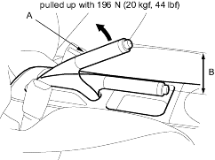
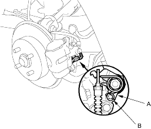
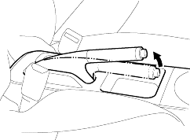

- Pull the parking brake lever (A) with 196 N (20 kgf, 44 lbf) of force to fully apply the parking brake. The parking brake lever should be locked within the specified number of clicks (B).
Lever locked clicks:
4-door:
| Rear Drum Brake: 6 – 7 |
| Rear Disc Brake: 7 – 8 |
5-door: 8 – 9

- Adjust the parking brake if the lever clicks are not within the specification.
NOTE: After servicing the rear brake pads or callipers, or the rear brake shoe, loosen the parking brake adjusting nut, start the engine and depress the brake pedal several times to set the self-adjusting brake before adjusting the parking brake.
- Block the front wheels, then raise the rear of the vehicle and make sure it is securely supported.
- On vehicles with rear disc brakes, make sure the parking brake arm (A) on the rear brake calliper contacts the brake calliper pin (B).

- Remove the console cover.
- Pull the parking brake lever up one click.
